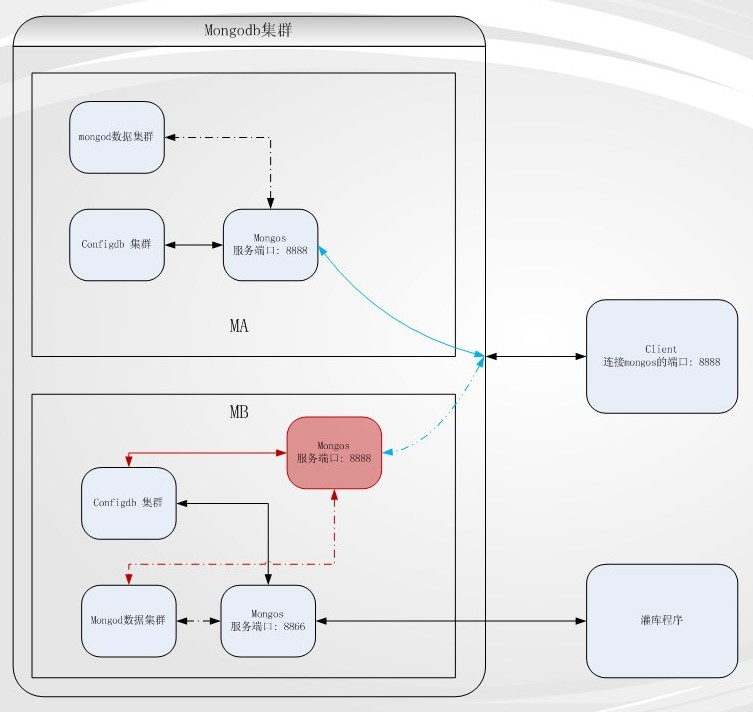

2012-01-15 于 浦东世纪公园
笔者在一个项目中使用了mongodb存储文档，数量为单机几亿文档数。在使用过程中，遇到的一个场景是：由于算法上的调整，每隔一段时间需要重新灌数据。而在灌数据的时候，需要保证不影响已有的数据。
同时，数据不是静态的。文档在每时每刻都会不断的增加、更新和删除，这个过程不能中断，且需要保证切换后的数据库不会丢失文档。
众所周知，mongodb对大量写操作并不友好。在大量写操作时，mongodb那个全局锁会导致读性能急剧下降。在更新大量的数据时，如果保证写的速度，毫无疑问，会导致很多读请求被挂住。
解决这个问题的方法很多，一种方案是，单独用一个mongod来灌数据，灌完后将这数据的文件复制到线上，然后用脚本修改目录名，并重启mongodb。同时，在这个过程中暂停写入操作。
当显然，上述过程会导致两方面问题:
我们可以创建两个mongodb集群MA和MB。MA提供服务，包括增删改查。两个集群的示意图如下：
在某个时刻更新算法，需要重灌数据的时候，启动MB集群，并且在此时（下称X）起，增删改操作同时写到MA和MB两个集群。写操作同时作用到MA和MB两个集群，有很多方式，AMQP协议提供了一种将一份数据分发给多个接收端的方案，开源实现有rabbitMQ，以及zeroMQ等。
在X时刻之后，MB集群，一方面接收实时的增删改操作，另一方面开始接受灌库操作。直到灌库完成。这是，需要做的一件事是，将上图中蓝色的虚实线切换，具体来说是，停止MA的mongos，并启动MB的红色部分的mongos。这样，就平滑的完成了数据库的切换。
需要说明的一点是，上述的8866的mongos可以分步在其他任何一个地方，跟在线服务没有关联；而8888的mongos，需要在任何客户端连接的地方分别部署两套（mongos程序可以是一个，但启动脚本需要两个，或者用不同的参数指定即可）
由于mongodb提供了mongos和mongod分别来实现路由和数据存储，根据实际使用场景，善用这两个分离的模块，可以起到一些很好的效果。